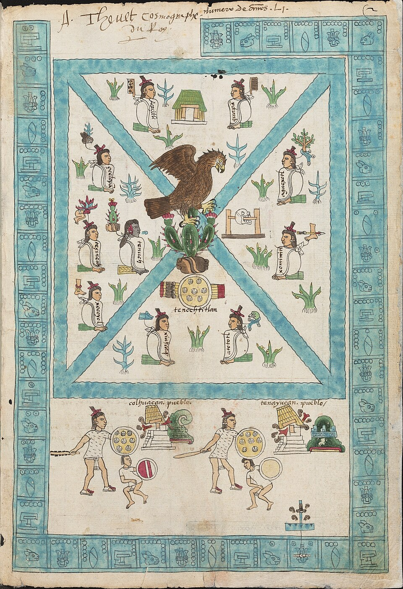

En un islote del lago de Texcoco, los mexicas fundan la ciudad de México-Tenochtitlan
Según cuentan los cantares, la señal prometida apareció al fin entre los carrizales: un águila posada sobre un nopal, devorando una serpiente. Tras generaciones de peregrinar desde Aztlán, el pueblo de Tenoch levanta altar y chozas sobre las aguas, bajo el tributo de Azcapotzalco.

Sobre las aguas quietas del lago, entre carrizales y nubes de garzas, un puñado de hombres levanta desde hoy las primeras casas de una ciudad nueva. Según cuentan los cantares, los sacerdotes mexicas hallaron al amanecer la señal que su dios les había prometido: un águila posada sobre un nopal que brota de la peña, devorando una serpiente. Ante el prodigio, los caudillos lloraron y besaron la tierra del islote. Allí mismo, con céspedes y cañas, comenzaron a alzar un altar humilde a Huitzilopochtli, su dios tutelar, y trazaron el asiento de la ciudad que llamarán México-Tenochtitlan.
Guía a este pueblo el anciano Tenoch, sacerdote y caudillo, en quien descansa la memoria de una peregrinación larguísima. Los mexicas dicen venir de Aztlán, un lugar de garzas situado hacia el norte, del que salieron hace muchas generaciones por mandato de su dios. Han sido huéspedes incómodos en todas partes: fueron expulsados de Chapultepec, sirvieron a los señores de Culhuacán, padecieron guerras y destierros. Ningún señorío de la ribera quiso darles asiento, y por eso han terminado en este islote pantanoso que nadie reclamaba, entre juncos, culebras de agua y salitre, donde solo la fe puede fundar algo.
El valle está repartido desde antiguo entre señoríos poderosos. En la ribera occidental manda Azcapotzalco, cabeza de los tepanecas, cuyo señor tolera a los recién llegados a cambio de tributo y de servicio en sus guerras. Los mexicas pagarán con pescado, ranas y aves del lago, y con la sangre de sus guerreros. Para comer donde no hay tierra recurren al ingenio de las chinampas: tejen armazones de varas y raíces, los cubren con el lodo fértil del fondo y siembran sobre el agua maíz, chile y calabaza. Así la laguna, que parecía miseria, empieza a volverse sustento.
Quien se acerque en canoa verá a las familias cortando carrizo, clavando estacas en el fango, secando redes al sol. Las mujeres muelen el maíz prestado y los niños juntan ahuautle y caracoles de la orilla. Se dice que los ancianos repiten la promesa del dios: que en este sitio su pueblo será señor de muchas gentes, y que la ciudad será famosa entre todas. Los vecinos de tierra firme se burlan de los advenedizos que cenan culebras. Ellos callan, trabajan y miran el águila pintada ya en sus escudos, como quien guarda una palabra empeñada.
Este diario ha visto fundar aldeas y ha visto morir señoríos, y confiesa que pocas fundaciones habrán parecido más pobres que esta: un peñasco en el agua, unas chozas de caña, un altar de tierra. Y sin embargo, algo hay en la tenacidad de esta gente que impone respeto. Pueblos más ricos duermen tranquilos en la ribera; estos desterrados, en cambio, velan y edifican. Si valen lo que cuentan los cantares, el águila no se posó en vano. El tiempo, que es el único juez de las ciudades, dirá si el nopal dio flor o espina.